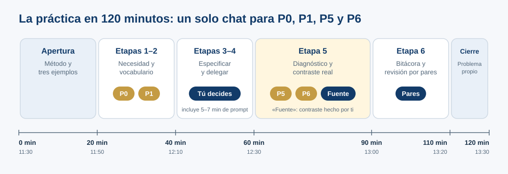

Práctica guiada: P0, P1, P5 y P6
Durante el taller · guía de la práctica (120 min)
- Cuatro prompts (P0, P1, P5 y P6) en un solo chat; las etapas 3 y 4 las resuelves tú.
- La verificación con una fuente primaria la haces tú: la autorrevisión de la IA (P6) no basta.
- Todo queda en la bitácora, para que otra persona pueda reconstruir el proceso.
Los cuatro prompts principales se ejecutan en un mismo chat, conservando las respuestas anteriores. La exploración, la especificación humana, la verificación y la bitácora completan las seis etapas. El término «antes del prompt» no prohíbe usar IA para aprender desde el inicio.
La numeración sigue la de la versión completa del taller: P2–P4 corresponden a las etapas 3 y 4, que aquí haces tú sin pedírselas a la IA.

Descargar Excel para participantes · Plantilla de bitácora (.docx) · Ver bitácora
Desarrollo de la práctica
Duración total del taller: 120 min. Actividad: diagnóstico preliminar de documentación. Trabaja con el Excel simulado. Los datos son ficticios y no son resultados publicables. Usa un solo chat para P0, P1, P5 y P6, y conserva la secuencia. Puedes usar Google Docs o Markdown para la bitácora. ¿Prefieres tenerlo todo en una hoja? Usa la tarjeta de práctica.

Min 0–20 (11:30–11:50) · Apertura y método
Analiza los tres ejemplos: operación ambigua, cita real con afirmación no respaldada y metadatos fabricados. Se presentan las seis etapas del trabajo con IA.
Min 20–40 (11:50–12:10) · Etapas 1 y 2: necesidad y vocabulario
Adjunta el Excel simulado y escribe:
Tengo este Excel de expresión génica de cinco filas y tres condiciones. Voy a publicar un artículo y me piden que los datos sigan los principios FAIR. ¿Me ayudas a prepararlo?
Registra qué hizo la IA: ¿preguntó, explicó, sugirió archivos, atribuyó un significado experimental no demostrado? Que una respuesta sea útil no la vuelve automáticamente publicable.
Antes de modificar el Excel, identifica solo cinco conceptos prioritarios que debo entender para preparar datos conforme a FAIR. Explica cada uno en una oración conectada con este archivo y formula cinco preguntas críticas al responsable del experimento. Distingue lo observado en el archivo de lo que falta confirmar y de lo que requiere consulta externa. No inventes unidades, tratamiento, cepa, método, replicación ni significado de «prom.». Indica dos fuentes institucionales candidatas, sin afirmar que ya las verificaste.
Puesta en común (3 min). Cada persona usa un asistente distinto: aprovechemos la diferencia. ¿A quién le hizo preguntas antes de responder? ¿A quién le entregó archivos? ¿Alguien recibió unidades o tratamientos que el Excel no menciona?
Min 40–60 (12:10–12:30) · Etapas 3 y 4: especificar, construir instrucciones y delegar
Primeros 5–7 minutos: consulta Del problema al prompt y realiza la actividad breve. Elige los componentes necesarios para un diagnóstico documental: objetivo, contexto, tarea, salida, restricciones y verificación. El rol es opcional. Este segmento sustituye parte de la explicación de estas etapas: no añade tiempo al taller.
Luego escribe en la sección 3 de tu bitácora, sin pedir a la IA que tome las decisiones por ti:
- Resultado buscado: diagnóstico documental, no depósito ni certificación.
- Alcance: unidades, condiciones, réplicas y celda vacía.
- Evidencia aceptable: celda/nota del archivo o fuente primaria externa, indicando qué se consultó.
- Qué delego a IA: inventariar evidencia y preguntas, organizar una tabla y proponer próximos pasos.
- Qué confirmo como investigador/a: realidad experimental, unidades, protocolo, responsables, publicación, licencias.
- Límites: no completar vacíos con cero, no inventar metadatos, no suponer que «prom.» es promedio.
- Criterio de aceptación: cada afirmación etiquetada como observada / inferida / pendiente / verificación externa.
Marco 4D, en breve: Delegation = repartir tareas; Description = especificar entradas y restricciones; Discernment = evaluar; Diligence = documentar y responder por decisiones.
Punto de atención: cuando ejecutes P5, anota en tu bitácora qué componentes de tu especificación aportaron claridad y qué responsabilidad de verificación conservas tú.
Min 60–90 (12:30–13:00) · Etapa 5: diagnóstico, autocrítica y contraste real
En esta etapa, cada afirmación del diagnóstico lleva una de cuatro etiquetas. P6 marca las que requieren verificación externa; solo tú puedes cambiarlas a «Verificado».
![Cuatro tarjetas. Observado: está en el archivo y se puede señalar; ejemplo, la columna C se llama Estrés A (prom.); qué hacer: citar hoja y celda. Inferido: plausible pero el archivo no lo dice; ejemplo, prom. probablemente significa promedio; qué hacer: marcarlo como hipótesis. Por confirmar: solo puede responderlo quien generó los datos; ejemplo, ¿promedio de cuántas réplicas?; qué hacer: preguntarlo a la responsable. Verificado: comprobado abriendo una fuente primaria; ejemplo, los principios FAIR están enumerados en el Box 2 de Wilkinson et al. 2016; qué hacer: anotar fuente, pasaje y fecha.](../recursos/escala-evidencia.svg)
Con base en el Excel y la especificación que elaboré, prepara un diagnóstico preliminar, solo para cuatro asuntos: unidades de los valores, definición de las condiciones, réplicas y celda vacía. Devuelve una tabla con asunto, observado y ubicación (hoja/celda cuando sea posible), por confirmar, acción siguiente, persona/rol que confirmaría y estado de evidencia. No completes datos por inferencia, no transformes valores ni declares cumplimiento FAIR. Añade tres preguntas prioritarias para el responsable experimental.
Audita tu diagnóstico anterior. Clasifica cada afirmación como observada en el Excel, inferencia, pendiente de confirmación o verificación externa requerida. Corrige afirmaciones como «no existe» cuando solo pueda concluirse «no está documentado». Selecciona una afirmación FAIR contrastable y explica qué fuente primaria y sección deberíamos revisar. No declares haberla verificado por revisar tu respuesta.
Contrasta la afirmación «FAIR exige que todos los datos sean completamente abiertos» con la fuente primaria. Sigue los pasos en Verificación independiente. Si no accedes a la fuente, escribe «pendiente», nunca «verificado». Si el tiempo no alcanza, prioriza esta verificación sobre leer completa la respuesta a P6.
Min 90–110 (13:00–13:20) · Etapa 6: registro y revisión por pares
Completa la bitácora; intercambia con otra persona y comprueba que pueda reconstruir qué se pidió, qué respondió la IA, cómo se contrastó y qué sigue pendiente. Una observación constructiva y una pregunta por pareja. En línea: comparte tu bitácora con permiso de comentario o pega el enlace en el chat de la reunión.
Min 110–120 (13:20–13:30) · Cierre
Escribe un problema propio al que aplicarías estas seis etapas, sin necesidad de resolverlo; usa la sección Transferencia a un problema real de la bitácora.
Pregunta de cierre: «La IA puede hacerlo. ¿Tú sabes qué hizo, por qué lo hizo y cómo comprobarlo?»
Antes de irte (2 min): responde, de forma anónima, en el formulario que compartiremos en la sesión: ¿Qué harás distinto la próxima vez que delegues algo a la IA? y ¿Qué parte del taller te costó más? Tus respuestas sirven para mejorar el taller: es su primera edición con participantes.
¿Vas bien? Autoevaluación
No hay una respuesta única, pero un buen resultado cumple con esto:
- Tu bitácora registra qué hizo la IA con P0 antes de que la corrigieras.
- Escribiste la especificación tú, antes de P5.
- El diagnóstico tiene cuatro asuntos y cada afirmación lleva una etiqueta (observado, inferido, por confirmar, verificado).
- Ninguna afirmación dice «verificado» sin una fuente que abriste tú, con pasaje y fecha.
- Distinguiste «no existe» de «no está documentado».
- Otra persona pudo reconstruir tu proceso leyendo la bitácora.
Si sobra tiempo
Usa un segundo chat limpio con el mismo Excel y la especificación final. Compara P0 y la respuesta final como demostración informal; no atribuyas causalidad experimental a esa comparación.